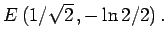

Inhalt Index DeskTop Bronstein

 Geometrie Differentialgeometrie Ebene Kurven Ausgezeichnete Kurvenpunkte und Asymptoten
Geometrie Differentialgeometrie Ebene Kurven Ausgezeichnete Kurvenpunkte und Asymptoten


Scheitel sind Kurvenpunkte, in denen die Krümmung ein Maximum oder ein Minimum besitzt. Die Ellipse hat z.B. die vier Scheitel A, B, C, D (linke Abbildung), die Kurve des Logarithmus (rechte Abbildung) nur einen bei 
Die Ermittlung der Scheitelpunkte wird auf die Bestimmung der Extremwerte von K oder, wenn das einfacher ist, auf die von R zurückgeführt, die mit den Formeln (3.463) bis (3.466) berechnet werden können.